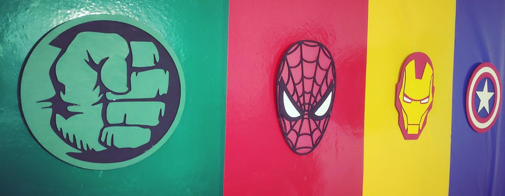
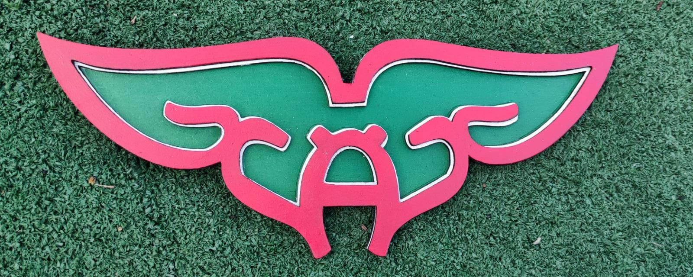

¿Qué es el corte y grabado láser?
El corte y el grabado láser son técnicas de fabricación digital que consisten en cortar o grabar un material mediante láser
¿Cómo funciona?
Una máquina de corte y grabado láser es un equipo controlado por un ordenador que usa un láser para cortar y/o grabar un material con alta precisión y velocidad. El haz láser es enfocado en un punto muy concreto, provocando que el material se quema, derrita o se evapore. De esta forma, podemos implementar diferentes modelos y diseños en diferentes materiales.
¿Qué materiales se pueden cortar y grabar?
EL tipo de material dependerá, entre otras cuestiones, de la potencia de la máquina, entre ellos podemos encontrar, madera, acrílicos, metales, vidrios, cueros entre

